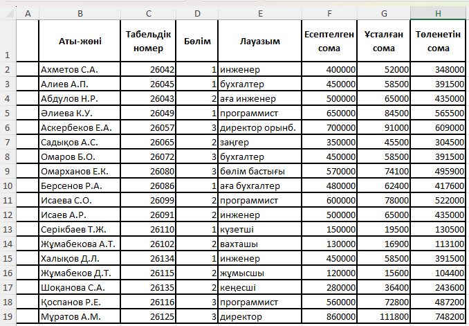
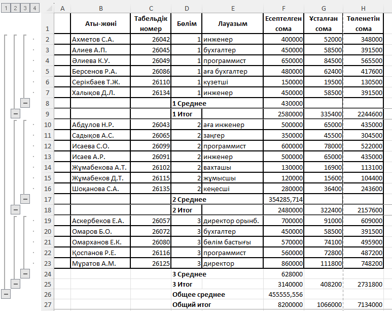

№ 4 зертханалық жұмыс
Кестелік деректермен жұмыс: MS Excel бағдарламасында сүзгілеу, сұрыптау және қорытындыларды есептеу
🎯 Жұмыстың мақсаты
MS Excel бағдарламасында кестелік деректерді ұйымдастыру мен өңдеудің заманауи тәсілдерін меңгеру: құрылымдалған кесте құру, есептелетін бағандарды пайдалану, сүзгілеу және көпдеңгейлі сұрыптау, топтық және жалпы қорытындыларды алу, сондай-ақ жұмыс парағының жекелеген элементтерін қорғау.
✅ Күтілетін оқу нәтижелері
Зертханалық жұмысты орындағаннан кейін студент:
- деректер ауқымын Excel бағдарламасының құрылымдалған кестесіне түрлендіре алуы;
- есептелетін бағандарды құрып, пайдалана алуы;
- бір немесе бірнеше шарт бойынша сүзгілеуді орындай алуы;
- көпдеңгейлі сұрыптауды қолдана алуы;
- деректер топтары бойынша қорытынды ақпарат ала алуы;
- деректерді талдау үшін аралық қорытындыларды пайдалана алуы;
- бастапқы кестенің жеке аналитикалық көріністерін құра алуы;
- формулалар мен жұмыс парағының жекелеген аймақтарын қорғай алуы;
- кестелік деректерді өңдеу нәтижелерін түсіндіре алуы тиіс.
📘 Қысқаша теориялық мәліметтер
1. Кестелік деректер және Excel бағдарламасының құрылымдалған кестесі
Кестелік деректер жиыны жолдар мен бағандардан тұрады. Әр жол әдетте бір объектіні немесе жазбаны, ал әр баған сол объектінің жеке белгісін сипаттайды. Деректерді дұрыс өңдеу үшін кестеде бірыңғай тақырып жолы болуы, әр бағандағы деректердің түрі бірдей болуы және деректер жиынының ішінде бос жолдар мен бағандар болмауы керек.
MS Excel бағдарламасында деректер ауқымын «Басты → Кесте ретінде пішімдеу» немесе «Кірістіру → Кесте» командалары арқылы құрылымдалған кестеге айналдырған жөн. Мұндай кестеде сүзгілеу және сұрыптау құралдары автоматты түрде пайда болады, есептелетін бағандарға қолдау көрсетіледі және жаңа жазбалар қосылғанда кесте кеңейеді.
2. Деректерді сүзгілеу
Сүзгілеу берілген шарттарға сәйкес келетін жолдарды ғана уақытша көрсетуге мүмкіндік береді. Жазбаларды мәтін, сандар, күндер және бірнеше критерий бойынша іріктеуге болады. Сүзгілеу деректерді жоймайды: шартқа сәйкес келмейтін жолдар уақытша жасырылады.
3. Деректерді сұрыптау
Сұрыптау жазбалардың көрсетілу ретін өзгертеді. Қарапайым сұрыптау бір баған бойынша, ал көпдеңгейлі сұрыптау бірнеше кілт бойынша ретімен орындалады. Мысалы, деректерді алдымен бөлімдер бойынша, содан кейін әр бөлім ішінде қызметкерлердің тегі бойынша немесе есептелген соманың кему ретімен орналастыруға болады.
4. Деректер бойынша қорытындыларды есептеу
Топтастырылған деректерді талдау үшін Excel қосындыны, орташа мәнді, жазбалар санын және басқа жинақталған көрсеткіштерді есептеуге мүмкіндік береді. «Аралық қорытындылар» құралы алдын ала сұрыпталған деректерге қолданылады және әр топ пен бүкіл деректер жиыны бойынша нәтижелер алуға мүмкіндік береді.
5. Деректерді қорғау
Есептеу кестесін бірлесіп пайдаланғанда жекелеген ұяшықтарды кездейсоқ өзгертуден қорғауға болады. Бұл әсіресе формулалар мен қорытынды көрсеткіштер үшін маңызды. Парақты қорғауды қоспас бұрын пайдаланушы қандай ұяшықтарды өңдей алатынын және қайсысы бұғатталған күйде қалатынын анықтау қажет.
💼 Практикалық жағдай
Кәсіпорын қызметкерлерінің тізімі берілген. Онда аты-жөні, табельдік нөмірі, бөлімі, лауазымы және шартты түрде есептелген сома көрсетілген. Деректерді Excel бағдарламасында ұйымдастырып, сүзгілеу және сұрыптау, бөлімдер бойынша қорытынды ақпарат алу және кадрлық құрамның жеке көрінісін дайындау қажет.
Ескерту. Бастапқы материалда есептелген сомадан шартты түрде 13 % ұстап қалу қолданылған. Бұл зертханалық жұмыста аталған коэффициент тек есептелетін бағандарды меңгеруге арналған оқу мысалы ретінде пайдаланылады және Қазақстан Республикасының заңнамасына сәйкес салықты немесе жалақыны есептеу моделі болып саналмайды.

🛠️ Жұмысты орындау тәртібі
1-тапсырма. Деректер кестесін құру және рәсімдеу
- Жаңа парақ құрып, оған «Қызметкерлер» атауын беріңіз.
- Баған тақырыптарын енгізіңіз: Аты-жөні, Табельдік нөмір, Бөлім, Лауазым, Есептелген сома, Ұсталған сома, Төленетін сома.
- 4.1-суреттегі үлгі бойынша қызметкерлердің бастапқы деректерін енгізіңіз.
- Деректер ауқымын Excel бағдарламасының құрылымдалған кестесіне түрлендіріңіз. «Тақырыптары бар кесте» жалаушасының қойылғанына көз жеткізіңіз.
- Кестені рәсімдеудің бірыңғай стилін таңдаңыз.
2-тапсырма. Есептелетін бағандарды құру
Оқу есебі үшін шартты ұстап қалу коэффициентін 13 % деп алыңыз. «Ұсталған сома» бағанының бірінші деректер жолында мына формуланы құрыңыз:
=Есептелген сома*13%«Төленетін сома» бағанында есептелген сома мен шартты ұстап қалу арасындағы айырманы есептеңіз. Формулалардың құрылымдалған кестенің бүкіл есептелетін бағанына автоматты түрде таралатынын тексеріңіз.
3-тапсырма. Деректерді сүзгілеу
3-бөлімде жұмыс істейтін, есептелген сомасы 500 000 ₸-ден асатын қызметкерлердің жазбаларын іріктеңіз.
- Алынған нәтижені тіркеп, табылған жазбалар санын анықтаңыз.
- Сүзгілерді тазалаңыз.
- 1-бөлім инженерлерінің жазбаларын іріктеңіз.
- «Есептелген сома» мәні 300 000–600 000 ₸ аралығында болатын 2-бөлім қызметкерлерін іріктеңіз.
4-тапсырма. Көпдеңгейлі сұрыптау
Бастапқы парақтың көшірмесін жасап, көпдеңгейлі сұрыптауды орындаңыз:
- Бөлім — өсу ретімен; бөлім ішінде Аты-жөні — өсу ретімен.
- Бөлім — өсу ретімен; бөлім ішінде Есептелген сома — кему ретімен.
- Бөлім → Лауазым → Аты-жөні — өсу ретімен.
- Бөлім → Лауазым → Табельдік нөмір — өсу ретімен.
Нәтижелерді салыстырып, әр сұрыптау нұсқасы қандай басқарушылық міндет үшін пайдалы болуы мүмкін екенін тұжырымдаңыз.
5-тапсырма. Аралық және жалпы қорытындыларды есептеу
Бастапқы деректері бар парақтың көшірмесін жасап, оған «Тізімдеме» атауын беріңіз. «Аралық қорытындылар» құралының дұрыс жұмыс істеуі үшін қажет болса, құрылымдалған кестені кәдімгі ауқымға түрлендіріңіз. Деректерді «Бөлім» өрісі бойынша сұрыптаңыз.
«Деректер → Аралық қорытындылар» командасының көмегімен әр бөлім үшін «Есептелген сома», «Ұсталған сома» және «Төленетін сома» өрістерінің қосындысын есептеңіз.
Бұрын есептелген қосындыларды жоймай, әр бөлім үшін «Есептелген сома» өрісінің орташа мәнін қосымша есептеңіз.
Құрылым деңгейлерін пайдаланып, тек жалпы қорытындыларды, бөлімдер бойынша қорытындыларды және толық тізімді кезекпен көрсетіңіз.
Алынған нәтижелерді талдаңыз.

6-тапсырма. Кадрлық құрам көрінісін қалыптастыру
Жеке парақта кәсіпорынның кадрлық құрамы кестесін құрыңыз. Аты-жөні, Табельдік нөмір, Бөлім және Лауазым өрістерін қалдырыңыз. Қызметкерлердің жалпы санын және әр бөлімдегі қызметкерлер санын анықтаңыз. Содан кейін жазбаларды лауазымдар бойынша топтастырып, бөлім нөмірлерін көрсете отырып, тағы бір көрініс құрыңыз.
7-тапсырма. Есептеу деректерін қорғау
- «Тізімдеме» парағында пайдаланушы өңдей алатын ұяшықтарды анықтаңыз.
- Есептелетін бағандар мен тақырыптарды бұғатталған күйде қалдырыңыз.
- Қажет болса, есептелетін ұяшықтардағы формулаларды жасыруды қосыңыз.
- Парақты қорғауды қосып, рұқсат етілген ұяшықтарды өңдеуге болатынын, ал қорғалған элементтерді өзгерту мүмкін еместігін тексеріңіз.
8-тапсырма. Нәтижелерді талдау
Қысқаша қорытынды жасаңыз: Excel бағдарламасының қандай құралдары деректерді іріктеу, реттеу және жинақтау үшін ең пайдалы болды; сүзгілеу сұрыптаудан несімен ерекшеленеді; кадрлық немесе басқа бизнес-деректерді жедел талдауда қандай қорытынды көрсеткіштерді пайдалануға болады.
📁 Жұмыс нәтижесіне қойылатын талаптар
- қызметкерлердің бастапқы тізімі бар MS Excel файлы;
- есептелетін бағандары бар құрылымдалған кесте;
- берілген шарттар бойынша сүзгілеу нәтижелері;
- көпдеңгейлі сұрыптау нәтижелері;
- топтық және жалпы қорытындылары бар «Тізімдеме» парағы;
- кадрлық құрам көрінісі мен қызметкерлер саны есептелген парақ;
- есептеу деректерін қорғаудың бапталған параметрлері;
- жұмыс нәтижелері бойынша қысқаша қорытынды.
❓ Бақылау сұрақтары
- Excel бағдарламасының құрылымдалған кестесі дегеніміз не?
- Кестелік деректер жиынын ұйымдастыруда қандай талаптарды сақтау ұсынылады?
- Сүзгілеу мен сұрыптаудың айырмашылығы неде?
- Сүзгі шартына сәйкес келмейтін деректерге не болады?
- Көпдеңгейлі сұрыптау дегеніміз не?
- Аралық қорытындыларды қолданар алдында деректерді сұрыптау арқылы топтастыру не үшін қажет?
- Қорытындыларды есептеу кезінде қандай жинақтау амалдарын пайдалануға болады?
- Excel кестесінде есептелетін бағандар не үшін қолданылады?
- Бастапқы деректердің жеке кадрлық көрінісінің артықшылығы неде?
- Жұмыс парағын қорғау не үшін қолданылады?
- Есептеу бағандарындағы формулаларды өзгертуден қорғау неліктен маңызды?
- Сүзгілеу, сұрыптау және топтық қорытындылар арқылы қандай бизнес-міндеттерді шешуге болады?
📊 Бағалау критерийлері
| Критерий | Балл |
|---|---|
| Бастапқы кестені құру және дұрыс ұйымдастыру | 15 |
| Есептелетін бағандар және формулалардың дұрыстығы | 15 |
| Берілген шарттар бойынша сүзгілеу | 15 |
| Көпдеңгейлі сұрыптау | 15 |
| Аралық және жалпы қорытындылар | 20 |
| Кадрлық көрініс және қызметкерлер санын есептеу | 10 |
| Деректерді қорғау, нәтижелерді талдау және ұқыпты рәсімдеу | 10 |
| Барлығы | 100 |
Келесі бөлімде біліміңізді интерактивті тест арқылы тексеріңіз.
Біліміңізді тексеріңіз
Орындаған зертханалық тапсырма бойынша сұрақтарға жауап беріңіз. Әр сұраққа бір дұрыс жауапты таңдаңыз.